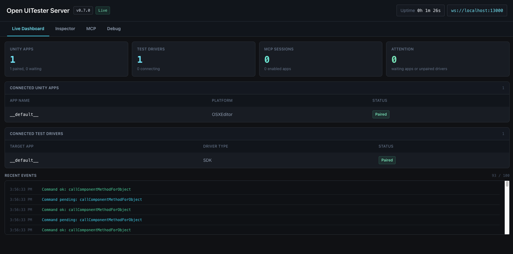
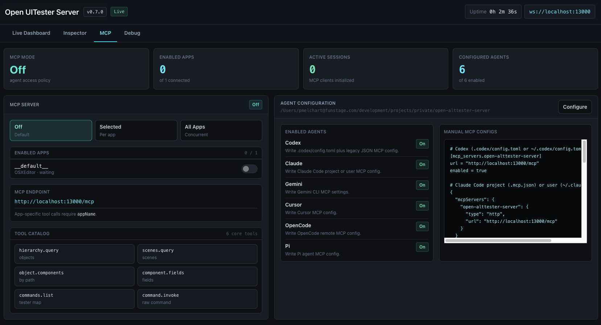
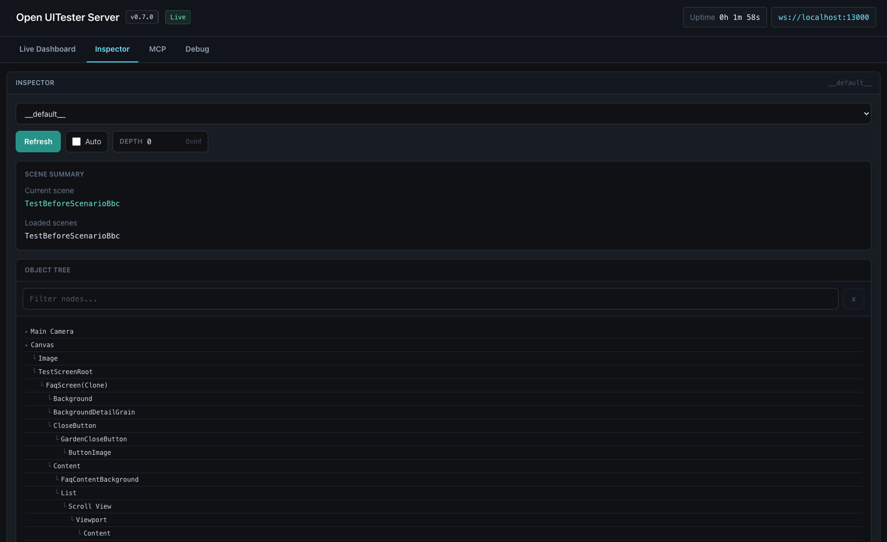
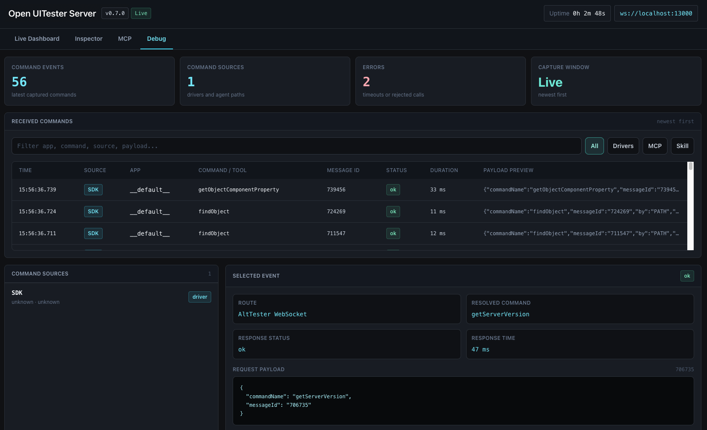

Desktop-compatible bridge
Unity apps connect through /altws/app; test drivers connect through /altws. Messages are routed by app name and driver pairing.
npm project · open-uitester-server
Package name: open-uitester-server on npm
Open UITester Server A free, open-source drop-in alternative to the commercial AltTester® Desktop app: WebSocket relay for the AltTester® Unity SDK, with a real-time web dashboard for Node.js and Bun.
Why it exists
The AltTester® Unity SDK is open source. This project replaces the commercial Desktop app’s relay with a drop-in WebSocket server, CLI, and dashboard for normal developer workflows.
Unity apps connect through /altws/app; test drivers connect through /altws. Messages are routed by app name and driver pairing.
Use the same package from npm, whether your automation machines standardize on Node.js or Bun.
Inspect connected Unity apps, drivers, pairings, live events, and scene hierarchy from the browser.
Run it directly with npx open-uitester-server or bunx open-uitester-server, then point the SDK at port 13000.

Dashboard preview
The browser dashboard gives local automation runs a live control surface: apps, drivers, routes, events, current scene, loaded scenes, and object tree inspection.
Agent integrations
The server exposes a local MCP endpoint for agents that support MCP clients. The GitHub skill bundle is available for agents that prefer local instructions and helper scripts, while MCP remains the shared path for Codex, Claude, Gemini, Cursor, OpenCode, Pi, and other MCP-capable tools.

Start the server and connect any MCP-capable client to the local streamable HTTP endpoint.
npx open-uitester-server http://127.0.0.1:13000/mcp
Generate project or global MCP config for Codex, Claude, Gemini, Cursor, OpenCode, and Pi from the dashboard.
Codex can install skill/open-uitester-tools/ as a skill. Other agents can clone or vendor that folder, read SKILL.md, and call scripts/uitester_tools.mjs directly.


Working model
The server is intentionally narrow: it does the WebSocket relay job, exposes enough dashboard visibility to debug runs, and keeps existing driver code intact.
Run npx open-uitester-server. The CLI starts HTTP and WebSocket handling on port 13000 by default.
Configure the AltTester® Unity SDK to use 127.0.0.1 and the chosen port. Device tests can use the host machine IP.
Keep existing Python, C#, Java, or Robot tests. Drivers connect to the server and route commands to the target app.
# install-free startup
npx open-uitester-server
UiTester Server running on port 13000
Dashboard: http://127.0.0.1:13000/
Unity apps connect to: ws://127.0.0.1:13000/altws/app
Test drivers connect to: ws://127.0.0.1:13000/altws
Where it fits
Use Open UITester Server when you need a free relay instead of the commercial AltTester® Desktop app. Use AltTester® Desktop when you need its extended productivity tooling (test recording and more).
| Need | Open UITester Server | AltTester® Desktop |
|---|---|---|
| WebSocket relay | Open-source relay for SDK apps and test drivers. | Official relay bundled with the desktop product. |
| Developer dashboard | Live local dashboard for connections, routes, events, and inspector data. | Desktop UI with additional product features. |
| Test recording | Not included. | Use AltTester® Desktop for recording and advanced workflows. |
Common questions
In typical AltTester® SDK workflows, the AltTester® Desktop app runs a local WebSocket relay between the Unity SDK and your test drivers. Open UiTester Server is a free, open-source drop-in replacement for that commercial Desktop relay, with a real-time web dashboard for Node.js and Bun.
Partly, for the core relay job: Open UiTester Server speaks the same WebSocket protocol as AltTester® Desktop so SDK apps and existing drivers can connect without changes. It does not include commercial Desktop features such as UI test recording.
Run npx open-uitester-server, then point the SDK at 127.0.0.1 and port 13000 (by default). Unity apps use /altws/app; drivers use /altws.
Yes. Keep your existing driver tests; they connect to the server and route commands to the target app by name, the same way they would with AltTester® Desktop.
Ready for npm
Open a terminal, start the server, then point your AltTester® Unity SDK build and driver tests at the same host and port.